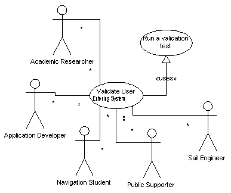

|
|
SailAway Project |
| Diagram |  |
|---|---|
| Name | Validate User Entering System |
| Iteration | Finished |
| Summary | Gather User information in order to ensure later processes may rely upon its existance. |
| Basic Course of Events |
|
| Alternative Paths |
|
| Exception Paths | Until this validator marks the user information as sufficient, the user effectively operates as an anonymous user. Some remote resources may be willing to accept interactions with partial infromation, but the System will not count upon it. |
| Extension Points | . |
| Trigger | The System triggers this case when a process that relies upon user data finds that some of that data is missing and the user has not expressed a desire to operate anonymously. |
| Assumptions | If the system is being run in batch mode and user information is missing, the simulation validator will determine that the simulation is is being run as a partially anonymous user. |
| Preconditions | There may be files present on the local hardware that provide user infromation sufficient to supply all that is needed for user validation. Check to see if such a file exists. |
| Postconditions | After this process is done, sufficient user information is available to identify the user running a simulation for all downstream processes. It is not known for sure (in the security sense) that the user information is correct. This process will not prevent fraudulent identification. |
| Related Environment Rules | 3 |
| Author | Dr Alfred W Differ |
| Date |
2001/12/26 - Facade 2002/01/06 - Filled 2002/02/04 - Focused 2002/02/15 - Finished |